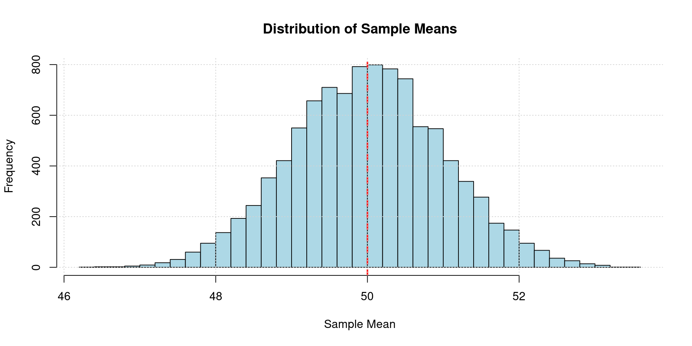

Code
set.seed(42)
population_mean <- 50
population_sd <- 10
sample_size <- 100
num_samples <- 10000
sample_means <- replicate(num_samples, mean(rnorm(sample_size, mean = population_mean, sd = population_sd)))
hist(sample_means,
breaks = 50,
main = "Distribution of Sample Means",
xlab = "Sample Mean",
ylab = "Frequency",
col = "lightblue",
border = "black")
abline(v = population_mean, col = "red", lty = 2, lwd = 2)
grid()